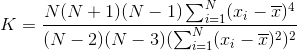
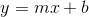
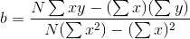
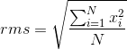
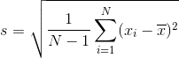
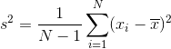
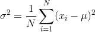

LinqStatistics API
The LinqStatistics API is a set of extension methods that are modelled after Enumerable, with overloads to accept the same intrinsic numeric types as Sum and Average. TheLinqStatistics.NaN namespace includes implmentations that will return NaN instead of throwing exceptions when cases like divide by zero would happen.
Statistics Included
CountEach
Covariance

Histogram
Kurtosis

Least Squares Linear Regression



Median
MinMax
Mode
Pearson

Range
Root Mean Square

Skewness

Standard Deviation


Variance

